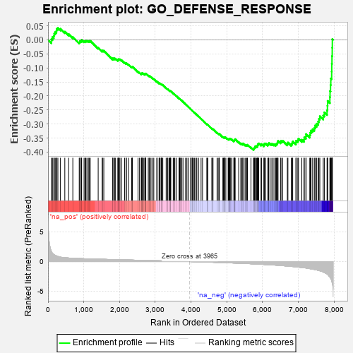
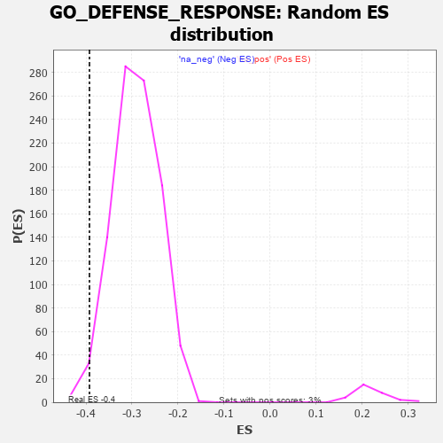

| | | Dataset | 7d |
| Phenotype | NoPhenotypeAvailable |
| Upregulated in class | na_neg |
| GeneSet | GO_DEFENSE_RESPONSE |
| Enrichment Score (ES) | -0.39238295 |
| Normalized Enrichment Score (NES) | -1.3505709 |
| Nominal p-value | 0.020618556 |
| FDR q-value | 0.4033729 |
| FWER p-Value | 1.0 |
Table: GSEA Results Summary

Fig 1: Enrichment plot: GO_DEFENSE_RESPONSE
Profile of the Running ES Score & Positions of GeneSet Members on the Rank Ordered List
| PROBE | GENE SYMBOL | GENE_TITLE | RANK IN GENE LIST | RANK METRIC SCORE | RUNNING ES | CORE ENRICHMENT | | 1 | UBE2K | | | 94 | 1.739 | 0.0023 | No |
| 2 | ADCY8 | | | 124 | 1.418 | 0.0102 | No |
| 3 | CSRP3 | | | 161 | 1.186 | 0.0154 | No |
| 4 | FOXF1 | | | 176 | 1.136 | 0.0230 | No |
| 5 | BCL3 | | | 202 | 1.047 | 0.0284 | No |
| 6 | DCST1 | | | 237 | 0.959 | 0.0320 | No |
| 7 | NFX1 | | | 242 | 0.949 | 0.0393 | No |
| 8 | HGF | | | 276 | 0.870 | 0.0422 | No |
| 9 | CNOT7 | | | 348 | 0.750 | 0.0393 | No |
| 10 | LRP1 | | | 470 | 0.648 | 0.0290 | No |
| 11 | MX1 | | | 578 | 0.604 | 0.0202 | No |
| 12 | XRCC6 | | | 694 | 0.560 | 0.0100 | No |
| 13 | TTC4 | | | 873 | 0.513 | -0.0087 | No |
| 14 | HMGB2 | | | 892 | 0.507 | -0.0068 | No |
| 15 | HDAC5 | | | 900 | 0.506 | -0.0035 | No |
| 16 | MATR3 | | | 937 | 0.498 | -0.0041 | No |
| 17 | PDCD4 | | | 941 | 0.497 | -0.0004 | No |
| 18 | HMGB4 | | | 1008 | 0.482 | -0.0049 | No |
| 19 | AKT1 | | | 1040 | 0.476 | -0.0049 | No |
| 20 | MEF2C | | | 1054 | 0.473 | -0.0027 | No |
| 21 | NCBP3 | | | 1087 | 0.466 | -0.0030 | No |
| 22 | SRC | | | 1128 | 0.459 | -0.0043 | No |
| 23 | PSMD7 | | | 1152 | 0.454 | -0.0036 | No |
| 24 | PSMD2 | | | 1181 | 0.450 | -0.0035 | No |
| 25 | EXOC1 | | | 1403 | 0.409 | -0.0286 | No |
| 26 | INHBB | | | 1514 | 0.388 | -0.0396 | No |
| 27 | LIAS | | | 1524 | 0.387 | -0.0375 | No |
| 28 | SOCS6 | | | 1560 | 0.381 | -0.0389 | No |
| 29 | PSMD4 | | | 1811 | 0.335 | -0.0683 | No |
| 30 | ABR | | | 1812 | 0.335 | -0.0656 | No |
| 31 | TRIM5 | | | 1852 | 0.327 | -0.0679 | No |
| 32 | PSMD6 | | | 1858 | 0.326 | -0.0658 | No |
| 33 | PAK3 | | | 1889 | 0.322 | -0.0671 | No |
| 34 | MICU1 | | | 1954 | 0.313 | -0.0727 | No |
| 35 | CCR4 | | | 1959 | 0.312 | -0.0707 | No |
| 36 | NFRKB | | | 1968 | 0.310 | -0.0691 | No |
| 37 | GPX4 | | | 1989 | 0.306 | -0.0692 | No |
| 38 | RAF1 | | | 2011 | 0.303 | -0.0694 | No |
| 39 | IRF4 | | | 2054 | 0.298 | -0.0723 | No |
| 40 | PSME4 | | | 2143 | 0.285 | -0.0813 | No |
| 41 | SYK | | | 2186 | 0.278 | -0.0844 | No |
| 42 | C1QBP | | | 2189 | 0.278 | -0.0824 | No |
| 43 | PSMF1 | | | 2251 | 0.268 | -0.0881 | No |
| 44 | ANO6 | | | 2339 | 0.255 | -0.0972 | No |
| 45 | MIF | | | 2357 | 0.252 | -0.0973 | No |
| 46 | SIN3A | | | 2361 | 0.251 | -0.0956 | No |
| 47 | TLR1 | | | 2517 | 0.224 | -0.1137 | No |
| 48 | PSMD5 | | | 2560 | 0.218 | -0.1173 | No |
| 49 | PDE12 | | | 2608 | 0.211 | -0.1216 | No |
| 50 | WIPI2 | | | 2618 | 0.210 | -0.1211 | No |
| 51 | PUM2 | | | 2627 | 0.209 | -0.1204 | No |
| 52 | ABCF3 | | | 2628 | 0.209 | -0.1187 | No |
| 53 | ATRN | | | 2640 | 0.207 | -0.1184 | No |
| 54 | WDR83 | | | 2669 | 0.203 | -0.1203 | No |
| 55 | CLPB | | | 2706 | 0.198 | -0.1233 | No |
| 56 | PHB2 | | | 2712 | 0.197 | -0.1223 | No |
| 57 | DDX1 | | | 2718 | 0.196 | -0.1213 | No |
| 58 | RORA | | | 2730 | 0.193 | -0.1212 | No |
| 59 | CUL1 | | | 2735 | 0.193 | -0.1201 | No |
| 60 | FER | | | 2803 | 0.183 | -0.1272 | No |
| 61 | BECN1 | | | 2828 | 0.179 | -0.1288 | No |
| 62 | NR2E1 | | | 2844 | 0.177 | -0.1293 | No |
| 63 | DAPK3 | | | 2880 | 0.169 | -0.1324 | No |
| 64 | ACVR1 | | | 2932 | 0.161 | -0.1377 | No |
| 65 | BTK | | | 2958 | 0.156 | -0.1396 | No |
| 66 | UFL1 | | | 3041 | 0.144 | -0.1490 | No |
| 67 | ABCE1 | | | 3051 | 0.143 | -0.1490 | No |
| 68 | AIMP1 | | | 3105 | 0.136 | -0.1547 | No |
| 69 | GPX1 | | | 3109 | 0.135 | -0.1539 | No |
| 70 | OGG1 | | | 3135 | 0.132 | -0.1561 | No |
| 71 | GCH1 | | | 3166 | 0.127 | -0.1589 | No |
| 72 | SCYL1 | | | 3172 | 0.126 | -0.1585 | No |
| 73 | PSMD9 | | | 3179 | 0.125 | -0.1582 | No |
| 74 | AP1G1 | | | 3210 | 0.121 | -0.1611 | No |
| 75 | SMAD3 | | | 3303 | 0.105 | -0.1721 | No |
| 76 | SMAD1 | | | 3337 | 0.099 | -0.1755 | No |
| 77 | TAB1 | | | 3351 | 0.097 | -0.1764 | No |
| 78 | DDX3X | | | 3388 | 0.091 | -0.1803 | No |
| 79 | MED1 | | | 3405 | 0.089 | -0.1816 | No |
| 80 | SETD6 | | | 3420 | 0.087 | -0.1827 | No |
| 81 | TRIL | | | 3428 | 0.087 | -0.1829 | No |
| 82 | SARM1 | | | 3432 | 0.086 | -0.1826 | No |
| 83 | FES | | | 3501 | 0.077 | -0.1907 | No |
| 84 | PQBP1 | | | 3526 | 0.072 | -0.1932 | No |
| 85 | PRDX5 | | | 3547 | 0.068 | -0.1952 | No |
| 86 | MAPK3 | | | 3589 | 0.062 | -0.2000 | No |
| 87 | SKP1 | | | 3663 | 0.049 | -0.2090 | No |
| 88 | ABCD1 | | | 3677 | 0.047 | -0.2103 | No |
| 89 | CD180 | | | 3686 | 0.046 | -0.2110 | No |
| 90 | DHX9 | | | 3693 | 0.044 | -0.2114 | No |
| 91 | HSF1 | | | 3718 | 0.039 | -0.2141 | No |
| 92 | SYT11 | | | 3732 | 0.036 | -0.2155 | No |
| 93 | SBNO2 | | | 3774 | 0.032 | -0.2205 | No |
| 94 | FEM1A | | | 3847 | 0.021 | -0.2296 | No |
| 95 | TPST1 | | | 3884 | 0.013 | -0.2342 | No |
| 96 | IFIH1 | | | 3919 | 0.006 | -0.2385 | No |
| 97 | VPS35 | | | 3989 | -0.006 | -0.2474 | No |
| 98 | DDX58 | | | 3998 | -0.007 | -0.2483 | No |
| 99 | ECSIT | | | 4002 | -0.008 | -0.2487 | No |
| 100 | VEZF1 | | | 4033 | -0.013 | -0.2524 | No |
| 101 | MCPH1 | | | 4039 | -0.014 | -0.2529 | No |
| 102 | CSF1 | | | 4074 | -0.019 | -0.2572 | No |
| 103 | CHID1 | | | 4099 | -0.023 | -0.2601 | No |
| 104 | CRK | | | 4139 | -0.031 | -0.2648 | No |
| 105 | DDX17 | | | 4161 | -0.035 | -0.2673 | No |
| 106 | TIMP1 | | | 4209 | -0.043 | -0.2730 | No |
| 107 | PSME3 | | | 4280 | -0.056 | -0.2815 | No |
| 108 | ROMO1 | | | 4320 | -0.063 | -0.2860 | No |
| 109 | SETD2 | | | 4443 | -0.084 | -0.3011 | No |
| 110 | CDC37 | | | 4446 | -0.084 | -0.3006 | No |
| 111 | LRRK2 | | | 4467 | -0.087 | -0.3025 | No |
| 112 | CMA1 | | | 4580 | -0.114 | -0.3160 | No |
| 113 | NUB1 | | | 4604 | -0.119 | -0.3180 | No |
| 114 | GATA3 | | | 4614 | -0.120 | -0.3181 | No |
| 115 | PXK | | | 4726 | -0.144 | -0.3313 | No |
| 116 | CNPY3 | | | 4758 | -0.149 | -0.3340 | No |
| 117 | RAB14 | | | 4784 | -0.155 | -0.3360 | No |
| 118 | SRPK2 | | | 4790 | -0.155 | -0.3353 | No |
| 119 | CLU | | | 4889 | -0.174 | -0.3465 | No |
| 120 | VAMP8 | | | 4905 | -0.179 | -0.3470 | No |
| 121 | CASP1 | | | 4932 | -0.185 | -0.3488 | No |
| 122 | EP300 | | | 4941 | -0.186 | -0.3483 | No |
| 123 | XRCC5 | | | 4946 | -0.187 | -0.3473 | No |
| 124 | PRKDC | | | 4955 | -0.189 | -0.3467 | No |
| 125 | KLF4 | | | 5005 | -0.198 | -0.3514 | No |
| 126 | PDPK1 | | | 5043 | -0.207 | -0.3545 | No |
| 127 | DDX41 | | | 5058 | -0.211 | -0.3545 | No |
| 128 | PLD3 | | | 5059 | -0.212 | -0.3528 | No |
| 129 | FLNB | | | 5082 | -0.220 | -0.3538 | No |
| 130 | DRD2 | | | 5088 | -0.221 | -0.3526 | No |
| 131 | MMP9 | | | 5108 | -0.227 | -0.3532 | No |
| 132 | IPO7 | | | 5142 | -0.236 | -0.3555 | No |
| 133 | SMO | | | 5195 | -0.247 | -0.3602 | No |
| 134 | ASH1L | | | 5203 | -0.248 | -0.3590 | No |
| 135 | ATM | | | 5210 | -0.249 | -0.3577 | No |
| 136 | GPR4 | | | 5219 | -0.250 | -0.3567 | No |
| 137 | TMF1 | | | 5225 | -0.251 | -0.3553 | No |
| 138 | DDX21 | | | 5231 | -0.252 | -0.3538 | No |
| 139 | NPY2R | | | 5331 | -0.281 | -0.3643 | No |
| 140 | ACER3 | | | 5390 | -0.294 | -0.3693 | No |
| 141 | PPM1B | | | 5422 | -0.300 | -0.3709 | No |
| 142 | LYST | | | 5448 | -0.307 | -0.3715 | No |
| 143 | FRK | | | 5451 | -0.307 | -0.3693 | No |
| 144 | FABP4 | | | 5509 | -0.322 | -0.3739 | No |
| 145 | PCBP2 | | | 5539 | -0.331 | -0.3750 | No |
| 146 | FOLR2 | | | 5563 | -0.336 | -0.3751 | No |
| 147 | SPHK1 | | | 5576 | -0.339 | -0.3739 | No |
| 148 | PSMD1 | | | 5674 | -0.367 | -0.3834 | No |
| 149 | MX2 | | | 5745 | -0.390 | -0.3892 | Yes |
| 150 | TLR2 | | | 5761 | -0.395 | -0.3878 | Yes |
| 151 | ELF3 | | | 5768 | -0.396 | -0.3853 | Yes |
| 152 | VAMP7 | | | 5777 | -0.399 | -0.3831 | Yes |
| 153 | LAMP1 | | | 5796 | -0.404 | -0.3820 | Yes |
| 154 | ADA | | | 5798 | -0.405 | -0.3788 | Yes |
| 155 | SNX4 | | | 5834 | -0.415 | -0.3799 | Yes |
| 156 | TKFC | | | 5854 | -0.419 | -0.3789 | Yes |
| 157 | ATG7 | | | 5858 | -0.420 | -0.3758 | Yes |
| 158 | STAT4 | | | 5867 | -0.424 | -0.3733 | Yes |
| 159 | ASIC4 | | | 5876 | -0.427 | -0.3708 | Yes |
| 160 | CDO1 | | | 5892 | -0.432 | -0.3692 | Yes |
| 161 | PRDM1 | | | 5956 | -0.457 | -0.3735 | Yes |
| 162 | TTBK1 | | | 5969 | -0.460 | -0.3713 | Yes |
| 163 | RAC1 | | | 6036 | -0.484 | -0.3758 | Yes |
| 164 | VAMP3 | | | 6043 | -0.487 | -0.3725 | Yes |
| 165 | EVL | | | 6052 | -0.490 | -0.3695 | Yes |
| 166 | MMP25 | | | 6086 | -0.501 | -0.3696 | Yes |
| 167 | SCN9A | | | 6146 | -0.518 | -0.3730 | Yes |
| 168 | EGR1 | | | 6165 | -0.527 | -0.3709 | Yes |
| 169 | RAG1 | | | 6176 | -0.530 | -0.3678 | Yes |
| 170 | CDC42 | | | 6236 | -0.548 | -0.3709 | Yes |
| 171 | STK39 | | | 6274 | -0.563 | -0.3710 | Yes |
| 172 | NCAM1 | | | 6318 | -0.582 | -0.3718 | Yes |
| 173 | BIRC3 | | | 6366 | -0.603 | -0.3728 | Yes |
| 174 | ISG15 | | | 6385 | -0.608 | -0.3701 | Yes |
| 175 | MBL2 | | | 6411 | -0.623 | -0.3682 | Yes |
| 176 | RAB43 | | | 6419 | -0.628 | -0.3639 | Yes |
| 177 | MALT1 | | | 6432 | -0.634 | -0.3602 | Yes |
| 178 | DPP4 | | | 6501 | -0.663 | -0.3635 | Yes |
| 179 | TRPV4 | | | 6515 | -0.668 | -0.3597 | Yes |
| 180 | OTOP1 | | | 6562 | -0.690 | -0.3599 | Yes |
| 181 | PAK1 | | | 6691 | -0.757 | -0.3701 | Yes |
| 182 | EGFR | | | 6708 | -0.765 | -0.3659 | Yes |
| 183 | KYNU | | | 6802 | -0.816 | -0.3711 | Yes |
| 184 | LYAR | | | 6828 | -0.830 | -0.3675 | Yes |
| 185 | MGLL | | | 6842 | -0.838 | -0.3622 | Yes |
| 186 | LRP8 | | | 6931 | -0.889 | -0.3662 | Yes |
| 187 | GHSR | | | 6937 | -0.894 | -0.3595 | Yes |
| 188 | PDE2A | | | 6985 | -0.927 | -0.3579 | Yes |
| 189 | CCR2 | | | 7003 | -0.939 | -0.3523 | Yes |
| 190 | RAB1A | | | 7096 | -0.993 | -0.3560 | Yes |
| 191 | UFD1 | | | 7157 | -1.040 | -0.3551 | Yes |
| 192 | COTL1 | | | 7166 | -1.046 | -0.3475 | Yes |
| 193 | MPEG1 | | | 7210 | -1.083 | -0.3441 | Yes |
| 194 | KLKB1 | | | 7216 | -1.090 | -0.3357 | Yes |
| 195 | GRN | | | 7319 | -1.194 | -0.3390 | Yes |
| 196 | CYLD | | | 7333 | -1.206 | -0.3307 | Yes |
| 197 | PLAC8 | | | 7355 | -1.223 | -0.3233 | Yes |
| 198 | CELA1 | | | 7399 | -1.265 | -0.3184 | Yes |
| 199 | GGT1 | | | 7447 | -1.329 | -0.3135 | Yes |
| 200 | SHPK | | | 7469 | -1.360 | -0.3050 | Yes |
| 201 | VDAC1 | | | 7512 | -1.409 | -0.2987 | Yes |
| 202 | GRIK2 | | | 7552 | -1.471 | -0.2916 | Yes |
| 203 | NLRC3 | | | 7574 | -1.515 | -0.2818 | Yes |
| 204 | ELF4 | | | 7600 | -1.551 | -0.2722 | Yes |
| 205 | ADCY1 | | | 7695 | -1.752 | -0.2698 | Yes |
| 206 | ASIC1 | | | 7726 | -1.838 | -0.2585 | Yes |
| 207 | MUC2 | | | 7802 | -2.066 | -0.2511 | Yes |
| 208 | DCDC2 | | | 7813 | -2.099 | -0.2350 | Yes |
| 209 | TRAF6 | | | 7818 | -2.157 | -0.2177 | Yes |
| 210 | FYN | | | 7881 | -2.622 | -0.2040 | Yes |
| 211 | TRAF3 | | | 7886 | -2.695 | -0.1823 | Yes |
| 212 | MUC19 | | | 7900 | -2.797 | -0.1608 | Yes |
| 213 | PSMD3 | | | 7907 | -2.887 | -0.1377 | Yes |
| 214 | PSMD8 | | | 7931 | -3.286 | -0.1135 | Yes |
| 215 | ABCF1 | | | 7934 | -3.354 | -0.0860 | Yes |
| 216 | MRC1 | | | 7940 | -3.475 | -0.0580 | Yes |
| 217 | XIAP | | | 7947 | -3.696 | -0.0282 | Yes |
| 218 | DAPK1 | | | 7950 | -3.767 | 0.0027 | Yes |
Table: GSEA details [plain text format]

Fig 2: GO_DEFENSE_RESPONSE: Random ES distribution
Gene set null distribution of ES for GO_DEFENSE_RESPONSE